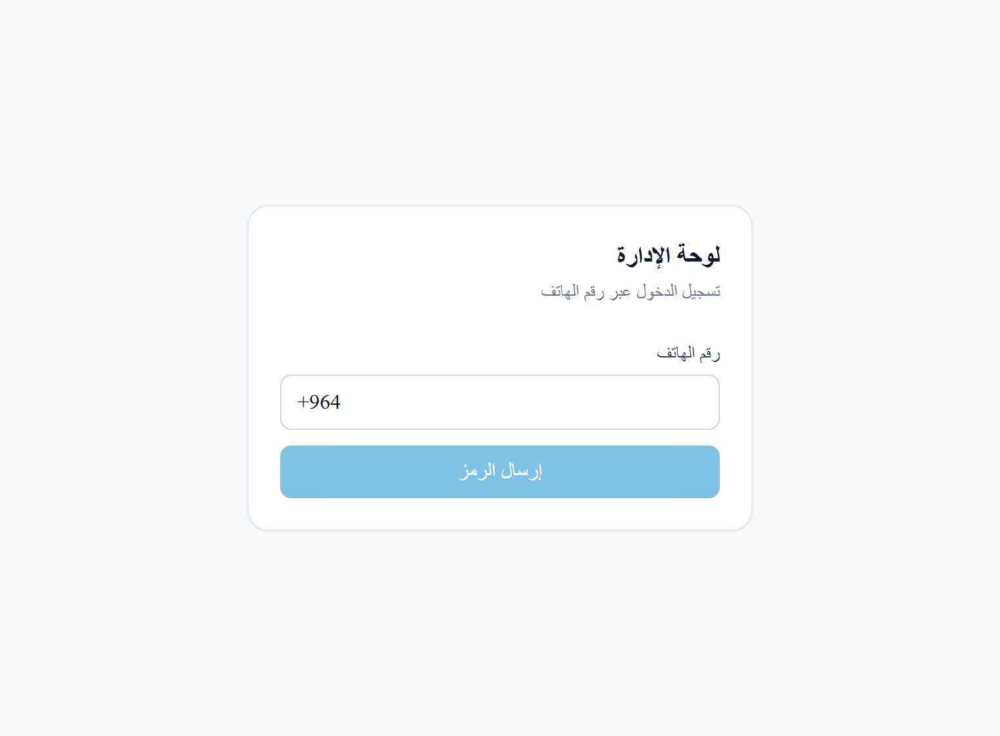

منصّة للمراسلة والتعلّم لطلبة الحوزة العلمية — محادثات لحظية، وتفريغ نصّي للمحاضرات الصوتية بالذكاء الاصطناعي، ولوحة إدارة متكاملة. A messaging & learning platform for Islamic seminary (hawza) students — real-time chat, audio-lecture transcription, and an admin dashboard.
منصّة مبنيّة لغرضٍ محدّد لطلبة الحوزة — وليست بوت تيليجرام. إنها منصّة مراسلة وتعلّم كاملة بُنيت من الصفر. A purpose-built platform for seminary students — NOT a Telegram bot. It is a full, from-scratch messaging & learning platform.
توفّر المنصّة: مراسلة لحظية (محادثات مباشرة، مجموعات، وقنوات عامّة مع إشراف)، خطّ معالجة للمحاضرات الصوتية بتفريغ نصّي مدعوم بالذكاء الاصطناعي، تصنيفاً معرفياً هرمياً (مراحل التعليم الحوزوي الأربع + المواد الدراسية)، إشعارات دفع عبر FCM، لوحة إدارة (إشراف، تحليلات، سجلّات تدقيق)، وتطبيق موبايل Flutter يعمل offline-first. The platform provides: real-time messaging (direct chats, groups, and public channels with moderation), an audio-lecture pipeline with AI-powered transcription, a hierarchical knowledge taxonomy (the four hawza education stages + subjects), FCM push notifications, an admin dashboard (moderation, analytics, audit logs), and an offline-first Flutter mobile app.
مصادقة كاملة: هاتف + رمز OTP، رموز JWT، تتبّع الأجهزة، وإدارة الجلسات. وحدات الخادم الثلاث عشرة جميعها موصولة ومُهيّأة بالبيانات. توثيق النشر الإنتاجي وأدلّة التشغيل مفصّلة وجاهزة. Full authentication: phone + OTP, JWT, device tracking, and session management. All 13 backend modules are wired and populated. Production deployment docs and ops runbooks are detailed and ready.
لوحة الإدارة (Next.js) لقطة حقيقية · شاشات الموبايل تُضاف من الجهازAdmin panel (Next.js) real screenshot · mobile screens to be added from a device

monorepo بـ pnpm · رسالة idempotent عبر الشبكة + خطّ تفريغ غير متزامنpnpm monorepo · idempotent message flow + async transcription pipeline
// pnpm monorepo apps/ ├─ backend/ NestJS · 13 modules · guards · interceptors · DTOs ├─ admin/ Next.js 14 (App Router) ├─ mobile/ Flutter (Riverpod · Drift · offline-first) └─ infra/ Docker Compose · Caddy · monitoring Message send flow: mobile POST /chats/:id/messages (clientId = idempotency key) → backend validates membership + channel-write rule (one txn) → emits message:new on a Socket.IO room → Redis adapter fans out to all backend pods → online members get the WS event → offline members get an FCM push Transcription pipeline: audio upload → BullMQ job → worker downloads from Cloudflare R2 → ffmpeg chunks audio >25MB → Groq Whisper transcribes each chunk → stitches segments with time offsets → emits lecture:transcribed
clientId من العميل يمنع تكرار الرسائل عند إعادة المحاولة على شبكة متقطّعة.Idempotency key: a client-side clientId prevents duplicate messages on retry over flaky networks.معرّف clientId يُنشأ على جانب العميل يمنع تكرار الرسائل عند إعادة المحاولة — كل رسالة تُكتب مرّة واحدة فقط مهما تكرّر الإرسال.A client-side clientId prevents duplicate messages on retry — each message is written exactly once no matter how many times the send is repeated.
Socket.IO مع محوّل Redis يبثّ الرسائل عبر كل أقران (pods) الخادم بشفافية تامّة — توسّع أفقي دون أيّ تعقيد في كود التطبيق.Socket.IO with a Redis adapter broadcasts messages across all backend pods transparently — horizontal scaling with no app-level complexity.
أدوار OWNER/ADMIN/MODERATOR فقط هي من يمكنها النشر في القنوات، ويُفرض ذلك داخل معاملة (transaction) واحدة إلى جانب التحقّق من العضوية.Only OWNER/ADMIN/MODERATOR roles can post to channels, enforced inside a single transaction alongside membership checks.
تكامل Groq Whisper مع تقطيع ffmpeg للصوت الأكبر من 25MB، يُشغَّل عبر مهام BullMQ، مع إزاحات زمنية على مستوى المقاطع (segment-level offsets).Groq Whisper integration with ffmpeg chunking for audio over 25MB, run via BullMQ jobs, with segment-level time offsets.
Postgres tsvector + فهرس GIN على الرسائل والمحاضرات، قابل للترتيب حسب درجة الصلة (relevance).Postgres tsvector + GIN index over messages and lectures, sortable by relevance.
يرفع العملاء الوسائط مباشرة إلى Cloudflare R2 عبر روابط موقّعة مسبقاً (موفّر للنطاق الترددي)؛ ومعترِض يسجّل كلّ إجراء إداري (من، ماذا، متى).Clients upload media directly to Cloudflare R2 via presigned URLs (bandwidth-efficient); an interceptor records every admin action (who, what, when).
.todo) دون اختبارات وحدات؛ ولوحة الإدارة بسيطة عن قصد.
The platform is functional, with detailed deployment + ops docs (DEPLOYMENT.md, OPERATIONS.md) and an E2E test suite. Gaps to be transparent about: the GitHub Actions workflow files referenced in the docs are not committed in the repo yet; test coverage is E2E-only (some tests are still .todo stubs) with no unit tests; and the admin panel is intentionally thin.
| المستودع الأحاديMonorepo | pnpm 10 · Node 20 · TypeScript |
| الخادمBackend | NestJS 10 + Fastify · Prisma 5 (مخطّط ~14 جدولاً)(schema ~14 tables) |
| قاعدة البياناتDatabase | PostgreSQL 16 + Redis 7 |
| الطابورQueue | BullMQ (التفريغ · الإشعارات)(transcription · notifications) |
| اللحظيّةRealtime | Socket.IO (محوّل Redis لبثٍّ متعدّد الأقران)(Redis adapter for multi-pod fanout) |
| التخزينStorage | Cloudflare R2 (S3-compatible) · روابط موقّعة مسبقاً · sharp (معالجة الصور، إزالة EXIF)· presigned URLs · sharp (image processing, EXIF strip) |
| التفريغTranscription | Groq Whisper · تقطيع ffmpeg· ffmpeg chunking |
| الموبايلMobile | Flutter 3.24 (Riverpod · Drift · socket_io_client) |
| الإدارةAdmin | Next.js 14 (App Router · React Query · Tailwind) |
| النشرDeployment | Docker Compose · Caddy (HTTPS تلقائي)(auto-HTTPS) |
| المراقبةMonitoring | Prometheus · Loki · Grafana · Uptime Kuma |
| النسخ الاحتياطيBackup | نسخ Postgres يومية مشفّرة بـ GPG إلى R2GPG-encrypted daily Postgres dumps to R2 |